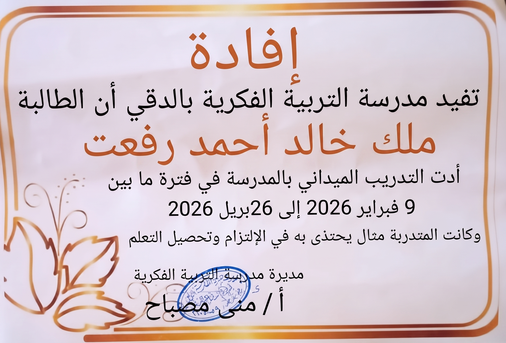
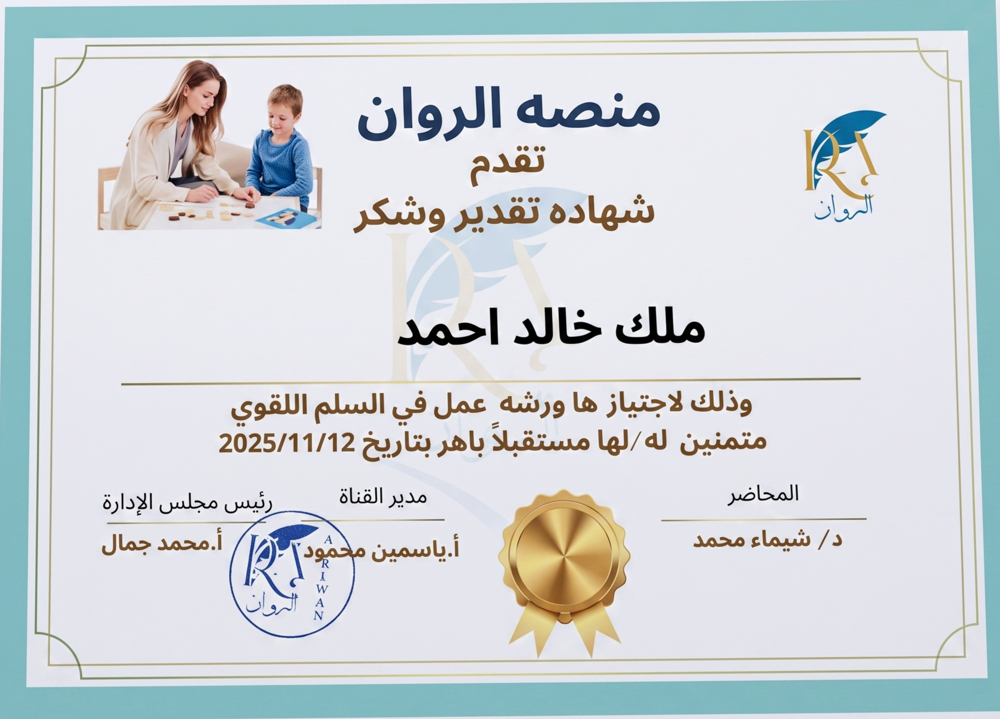
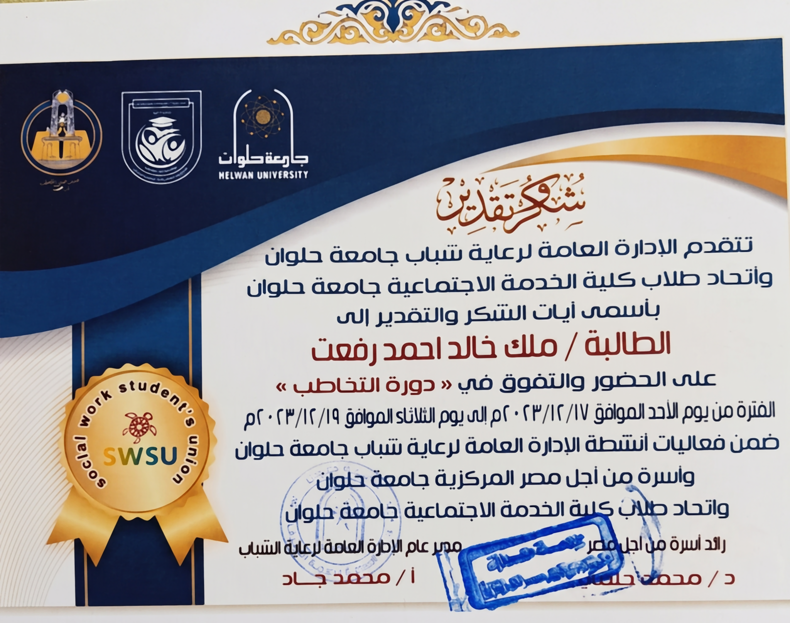
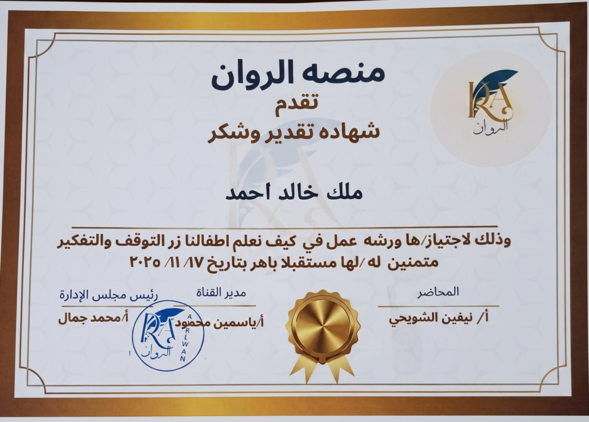
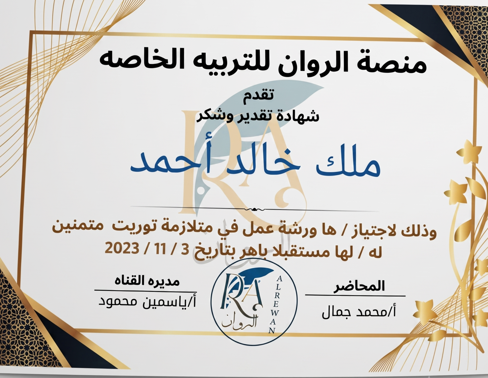

ملك خالد أحمد رفعت
تمكين كل طفل للوصول إلى أقصى إمكاناته
طالبة بالسنة الرابعة — كلية الاقتصاد المنزلي، جامعة حلوان. مكرسة لتغيير حياة الأطفال من خلال التربية الخاصة والعلاج الوظيفي القائم على الأدلة.
مجالات الخبرة
اضطراب طيف التوحد
استراتيجيات تدخل متخصصة للأطفال في طيف التوحد، تركز على التواصل والمهارات الاجتماعية والدعم السلوكي.
متلازمة داون
أساليب تعليمية مخصصة ودعم علاجي لتعزيز النمو المعرفي والمهارات الحركية والاندماج الاجتماعي.
ADHD
استراتيجيات سلوكية وتعليمية مصممة لتحسين التركيز والوظائف التنفيذية والتنظيم الذاتي للأطفال المصابين باضطراب فرط الحركة.
صعوبات التعلم
تقييم شامل وتدخل لعسر القراءة والكتابة والحساب وغيرها من اضطرابات التعلم المحددة.
تأخر النطق
أنشطة تحفيز النطق واللغة المستهدفة لدعم تطور اللغة التعبيرية والاستقبالية.
اضطرابات حسية
علاج التكامل الحسي للأطفال الذين يعانون من صعوبات المعالجة الحسية بما في ذلك فرط الحساسية ونقصها.
الشلل الدماغي
تطوير المهارات الحركية واستراتيجيات التكيف لتحسين الحركة والتنسيق والأداء اليومي.
الإعاقة البصرية
التدريب على التوجيه والحركة وتعليم برايل وتقنيات التعلم التكيفية للأطفال ذوي الإعاقة البصرية.
الإعاقة السمعية
تعليم لغة الإشارة العربية والتدريب السمعي ودعم التواصل للأطفال ضعاف السمع.
الإعاقة الفكرية
برامج تعليمية فردية تركز على مهارات الحياة اليومية والنمو المعرفي والاندماج الاجتماعي.
الإعاقات الحركية
أنشطة بدنية تكيفية وتكامل التكنولوجيا المساعدة لتعزيز الاستقلالية والمشاركة.
تعديل السلوك
خطط دعم سلوكي إيجابي واستراتيجيات قائمة على تحليل السلوك التطبيقي لتعزيز السلوكيات المرغوبة.
العلاج الوظيفي
أنشطة علاجية لتطوير المهارات الحركية الدقيقة والمعالجة الحسية والاستقلالية في الحياة اليومية.
التكامل الحسي
تجارب حسية منظمة لمساعدة الأطفال على معالجة المعلومات الحسية والاستجابة لها بشكل مناسب.
التدخل المبكر
دعم علاجي في الوقت المناسب للرضع والأطفال الصغار الذين يعانون من تأخر في النمو أو ظروف عالية الخطورة.
تطور اللغة
برامج تحفيز لغوي شاملة لبناء المفردات وتركيب الجمل ومهارات التواصل.
المهارات الأكاديمية
دعم أكاديمي منظم في القراءة والكتابة والحساب ومهارات الدراسة المصممة حسب أسلوب تعلم كل طفل.
مهارات الحياة اليومية
التدريب على الرعاية الذاتية والنظافة وارتداء الملابس والتغذية وغيرها من مهارات المعيشة المستقلة الأساسية.
المهارات الحركية الدقيقة
تمارين مستهدفة لتحسين قوة اليد والبراعة وقبضة القلم والقدرات اليدوية.
المهارات الحركية الكبرى
أنشطة لتعزيز التوازن والتنسيق والقوة والنمو البدني العام.
برايل
تعليم القراءة والكتابة بطريقة برايل لتمكين الأطفال ضعاف البصر من الوصول إلى المواد التعليمية.
لغة الإشارة العربية
إتقان لغة الإشارة العربية لتسهيل التواصل مع الأطفال ضعاف السمع وأسرهم.
العلاج باللعب
تقنيات اللعب العلاجي التي تساعد الأطفال على التعبير عن المشاعر وتطوير المهارات الاجتماعية.
إرشاد الوالدين
توجيه ودعم للوالدين لتنفيذ الاستراتيجيات العلاجية في المنزل وفهم احتياجات أطفالهم.
المهارات الإبداعية
الإبداع هو جوهر العلاج الفعال. هذه المهارات الفنية تثري ممارستي العلاجية وتوفر مسارات فريدة للتفاعل مع الأطفال.
الرسم
رسم توضيحي وتخطيط فني
التطريز
فن وتصميم الأقمشة المعقدة
الأشغال اليدوية
مشاريع حرفية إبداعية
حرق الخشب
فن النقش على الخشب
نحت الخشب
أعمال نحت خشبية فنية
كتابة القصص
كتابة إبداعية ورواية قصصية
الخياطة
بناء وتصميم الأقمشة
التفصيل
تصميم وصناعة الملابس
الأنشطة الإبداعية
أعمال حرفية علاجية مبتكرة
العلاج بالفن
تعبير إبداعي علاجي
الخبرة المهنية
المراكز الخاصة
العمل مباشرة مع الأطفال في مراكز علاجية خاصة متخصصة، وتقديم جلسات تدخل فردية وجماعية.
المدارس المتخصصة
التعاون مع مدارس التربية الخاصة لتنفيذ خطط تعليمية فردية وبرامج دعم علاجي.
عيادات العلاج
تقديم خدمات العلاج الوظيفي والتكامل الحسي في إعدادات سريرية تحت إشراف مهني متخصص.
برامج التدخل المبكر
تقديم خدمات التدخل المبكر للرضع والأطفال الصغار المعرضين لخطر تأخر النمو، مع التركيز على السنوات الحرجة.
جلسات العلاج الوظيفي
إجراء جلسات علاج وظيفي مستهدفة تركز على المهارات الحركية الدقيقة والمعالجة الحسية والأنشطة اليومية.
غرف التكامل الحسي
تصميم وتسهيل تجارب التكامل الحسي في غرف علاجية مجهزة بمعدات متخصصة.
برامج الدعم الأكاديمي
تقديم العلاج الأكاديمي ودعم التعلم للأطفال ذوي صعوبات التعلم المحددة.
جلسات النطق
المساعدة في جلسات علاج النطق واللغة، وتنفيذ أنشطة تحفيز اللغة والتعبير اللفظي.
برامج السلوك
تنفيذ برامج تعديل السلوك باستخدام التعزيز الإيجابي واستراتيجيات تحليل السلوك التطبيقي.
الشهادات والإنجازات


الحصول على الترتيب الأول في المستوى الثاني 2024-2025
تحقيق الترتيب الأول في السنة الدراسية 2024-2025


التدريب الميداني بمدرسة التربية الفنية بالدقي
خبرة عملية في التدريب الميداني التربوي



ورشة عمل في السلم اللقوي
تدريب على استخدام السلم اللقوي


دورة التخاطب
دورة متخصصة في مهارات التخاطب

ورشة عمل في كيف نعلم أطفالنا زر التفوق والتفكير
تدريب في استراتيجيات تعزيز التفوق والتفكير الإبداعي

{kind=link}
{kind=link}
{kind=link}
{kind=link}

ورشة العلاج الوظيفي للأطفال العاديين والأطفال ذوي الاحتياجات الخاصة
تدريب في العلاج الوظيفي لفئات الأطفال المختلفة
{kind=link}

ورشة عمل في توريت
تدريب متخصص في اضطراب توريت
الخدمات المهنية
العلاج الوظيفي
جلسات علاجية فردية تركز على المهارات الحركية الدقيقة والمعالجة الحسية والاستقلالية في الحياة اليومية.
- تنمية المهارات الحركية الدقيقة
- المعالجة الحسية
- التدريب على الرعاية الذاتية
التكامل الحسي
تجارب حسية منظمة لمساعدة الأطفال على التنظيم والاستجابة بشكل مناسب للمثيرات البيئية.
- تقييمات حسية
- أنظمة غذائية حسية فردية
- تكييف البيئة
تعديل السلوك
خطط دعم سلوكي إيجابي مصممة لتشجيع السلوكيات المرغوبة وتقليل السلوكيات التحدي.
- تقييمات وظيفية
- استراتيجيات ABA
- تدريب الوالدين
التربية الخاصة
دعم تعليمي شامل مصمم خصيصاً للأطفال ذوي الاحتياجات والقدرات التعليمية المتنوعة.
- خطط فردية
- مناهج تكيفية
- متابعة التقدم
الدعم الأكاديمي
علاج أكاديمي مستهدف وبناء مهارات للأطفال ذوي صعوبات التعلم المحددة.
- دعم القراءة والكتابة
- دعم الحساب
- مهارات الدراسة
صعوبات التعلم
تدخل متخصص لعسر القراءة والكتابة والحساب وغيرها من اضطرابات التعلم.
- تقييم تشخيصي
- تعليم متعدد الحواس
- تدريب استراتيجي
الاستشارات
استشارات مهنية للأسر والمؤسسات حول أفضل ممارسات التربية الخاصة واستراتيجيات التدخل.
- تطوير البرامج
- استراتيجيات الصف
- توصيات الموارد
إرشاد الوالدين
تمكين الوالدين بالمعرفة والاستراتيجيات والدعم العاطفي لمساعدة أطفالهم على الازدهار.
- استراتيجيات البرنامج المنزلي
- إدارة السلوك
- دعم الدفاع عن الحقوق